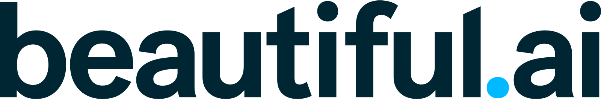
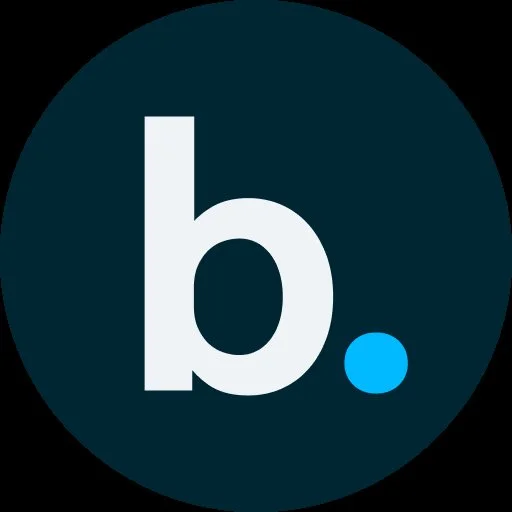

Logos
Our logo puts the complete professional thought at the fulcrum of modern AI. With human judgment in control, ideas land, wherever technology pivots next.
Logo
Use the full-color wordmark wherever you can.
Our primary logo is the full-color wordmark. On a light background is preferred. Fall back to other versions only when contrast or space limitations rule it out.

The symbol
Use the symbol where the wordmark doesn't fit.
A lowercase b with a cyan period is our entire belief system, condensed. The b is for beautiful. The dot is the moment a draft becomes finished work.
Preferred logo use
Use the version made for the space.
We use one of 4 preferred logos. The wordmark comes in 2 colorways, and 2 avatars cover social media profiles.

Clearspace
Keep 1× the height on every side.
Around the wordmark, we reserve clearspace equal to 1 x, the height of the b, on every side. Around the symbol, 1 x is the full height of the symbol. Nothing else sits in this margin.
Minimum size
Never below 80px wide.
The wordmark needs room for its letterforms, so 80px wide is the floor. When space gets tighter than that, switch to the symbol. It keeps the brand intact at favicon scale.
Do
These 3 practices keep it right.
Don't
These 9 changes break the signature, so we never make them.
The wordmark is a system. Don't distort, tilt, or crop it, don't remake or recolor it, don't add effects, don't combine it with other logos, don't set our name as text inside a sentence — write "Beautiful.ai" — and never place it on a low-contrast background.